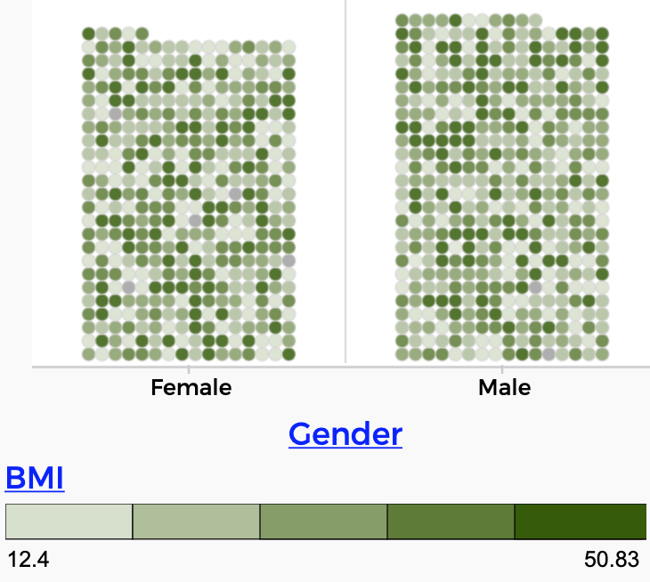

4 A First Assignment
This assignment will help you get comfortable with CODAP basics. It is designed to be conceptually super easy, so you can master some of the mechanics of doing a small project…because there will be more projects.
And it’s short. What you submit consists of a graph and a few sentences in a CODAP text box.
4.1 How do you know when you’re done?
- You have explored the dataset about Californians in 2013.
- You have found a simple relationship between two attributes.
- You have made a graph that shows that relationship.
- You have a CODAP document
- it includes the graph.
- it has a text box with a narrative
- the narrative begins with a claim about the data
- the narrative goes on to explain what you did and why the claim makes sense
- you have shared the CODAP doc and emailed the link to your instructor
(Sharing is in the “hamburger” menu in the upper left of the CODAP window. If you need more details, here is a set of instructions).
4.2 A new dataset!
Time to look at some new data! You will look at data for 1000 Californians in 2013.
… or you can at least start in the live illustration below.`
Here are some questions to answer to make sure you understand the data set.
The people are from a specific age range. What is that range?
Why do you suppose the dataset has people from that age range?
Describe the oldest person in the dataset.
Describe the person in the dataset with the highest income.
4.3 Some elaboration
Explore. It’s essential that you mess around with the data. Here, that means make graphs. More than one. Drag different attributes to the axes to make different graphs. Try stuff in the palettes at the right edge of the graph (like the “ruler” and the “eyeball”). Select things in the graphs and see what’s selected in other graphs.
Simple relationship. For this assignment, that means it’s a relationship between only two attributes. We have already explored more complex relationships: when we filtered the height-and-gender data to show only 10-year-olds, we were looking at three attributes: age, gender, and height. For this assignment, just look at two.
For example, with the previous dataset, you might have plotted Height against Weight. Or you might have made a graph of Gender and plopped BMI in the middle.


A Narrative explains what you did. Communication is part of data science (as it is a part of everything). You need to be able to explain yourself clearly and concisely. Use complete sentences. For this assignment, you will not need very many!
A Claim is a statement about the data that might be true or false. It doesn’t matter which, though we generally make claims we think are true. In the data with heights, with a graph of Height against Weight, you might claim: Heavier people are taller.
A claim does not have to be dramatic. A null result is still a result! Using the gender-BMI graph, you might claim: There’s no relationship between gender and BMI.
Of course, your claim will be about this new data set (1000 Californians), not the old one (800 children and teens).
4.4 Commentary
Data science demands communication. We create graphs and other visualizations in order to get our ideas across. They often illustrate a narrative, a story about the data and about our investigation, written out as text.
Students (and teachers) may not be used to writing in a mathy class. Furthermore, the style of writing will be different than what they’re used to in, say, English or History. It’s technical writing, explaining procedures and reasoning. Still, the objective is the same: to communicate clearly.
Mini-projects
Another challenge is that this kind of assignment is a balancing act: it’s a mini-project, less straightforward than a set of problems to solve. But it’s not a big project; we want students to do it reasonably quickly, and not get weighted down with deadlines, drafts, and expectations. That’s one reason why it’s limited to one text box.
When students are not used to this kind of assignment, the first few are often terrible. That’s OK. They (and you, the teacher) haven’t figured out what you’re looking for. (Though that’s why we had that section, “how do you know when you’re done?”) The work will improve with practice, but only if students do at least three of these. Whence, short.
This initial assignment is, as advertised, designed partly to get students through the mechanics: negotiating sharing in CODAP and turning things in by emailing a URL. It’s also conceptually simple, perhaps confusingly simple, in order to make it possible to focus on those mechanics.
Do an example?
To that end, as a teacher, you could demonstrate this assignment in front of the class. Here are two ideas for graphs to start with:
- Income by Gender
- Age by marital status
Pick one, show how to make the graph and rescale it, and brainstorm with the class what you could say in two or three sentences.
For example:
I claim that people who have never been married are generally younger than married people. This makes sense because once you’re married, you can never go back to being never-married. As you can see in the graph, the mean age for never-married people is in fact lower. There is still overlap, however: some unmarried people are pretty old, like, over 40.1
Having given an example, you could then tell students to do something like that, only different.
Be sure to include how to share a CODAP doc.
Rescaling and Reordering
Many students will probably do something with income. The problem is that income is highly skewed, and that means that space in the graph is scrunched down at the low end. If you put box plots or other measures on the data and compare males and females, they will not look as different as they might.
So to communicate a difference you want to highlight, you might rescale the axes even if it means losing some of the high-income outliers. (This gives you a chance to talk about whether that’s a good idea and how to cope with it.)


In any case, to rescale axes in CODAP, grab the numbers on an axis near one end and drag. In the illustration, we grabbed the top axis up at about $350,000 and dragged to the right.
You can do the same thing with a categorical axis, but there, dragging re-orders categories.
Debriefing
After you look over the assignments, you will want to discuss them with the class. Of course you can use this time to praise innovation and tenacity, and to point out where the work needs improvement. Here are some additional suggestions:
- Have some students present their work, especially if it investigated unusual attributes or used interesting new CODAP techniques.
- Point out areas no students might have explored. For example, our two ideas above are both numerical attributes grouped according to a categorical one. What about two categoricals—what would that look like? (For example, gender and marital status.)
- Point out CODAP features that need revealing such as rescaling axes or (xxx) fusing dots into bars.
- Compare putting one attribute on each axis as opposed to putting one on an axis and the other “plopped” into the middle as a legend. Actually put someone’s graph up, and then make another graph done the other way.
- Ask about the data in general, e.g., ask about what the income distribution looks like, and what that means in context (there are very few people making a lot of money, and a lot making not much; this is also a great time to discuss or review why median is a good alternative to mean for this data).
“Pretty old, like, over 40” is an actual quote from a student, referring to unmarried people in a dataset.↩︎